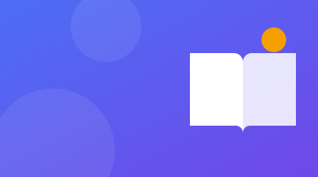
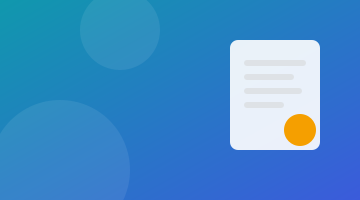
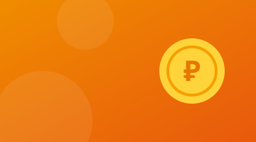
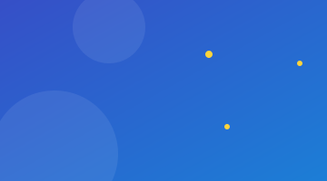

Практичные материалы об учёбе, IT-инструментах, деньгах и карьере. Фильтр по темам работает через адрес страницы — ссылкой на подборку можно поделиться.

Учёба· 5 мин чтения
Как прочитать научную статью за 20 минут
Метод трёх проходов: сначала каркас, потом суть, детали — только если статья действительно нужна.
Научную статью не нужно читать от первой до последней строки. Опытные исследователи используют метод трёх проходов — он экономит часы при подготовке литературного обзора для курсовой или ВКР.
Проход 1. Каркас (5 минут)
Прочитайте название, аннотацию, введение, заголовки разделов и выводы. Взгляните на рисунки и таблицы. После этого ответьте себе на пять вопросов: к какому типу относится работа, с какими работами она связана, корректны ли допущения, в чём основной вклад, понятно ли написано. Если статья не про вашу тему — смело закрывайте её.
Проход 2. Суть (10 минут)
Читайте внимательнее, но пропускайте доказательства и формулы. Отмечайте на полях непонятные термины и ссылки, которые стоит открыть позже. Главная цель — суметь пересказать содержание статьи однокурснику за минуту.
Проход 3. Детали (по необходимости)
Нужен, только если вы опираетесь на результаты статьи или повторяете эксперимент. Попробуйте мысленно «переписать» работу: какие решения вы бы приняли сами, где авторы могли ошибиться.
Лайфхак: заведите таблицу «автор — год — метод — результат — цитата». К концу семестра у вас будет готовый раздел «Обзор литературы».

Учёба· 6 мин чтения
Отчёт по ГОСТ 7.32–2017: 10 частых ошибок
Поля, нумерация, подписи рисунков и список источников — то, за что чаще всего возвращают отчёт.
ГОСТ 7.32–2017 описывает структуру и оформление отчёта о научно-исследовательской работе, и большинство вузов требует оформлять по нему лабораторные и курсовые. Вот ошибки, которые преподаватели видят чаще всего.
Неправильные поля. Левое — 30 мм, правое — 15 мм, верхнее и нижнее — 20 мм.
Номер на титульном листе. Титул считается, но номер на нём не ставится; нумерация — по центру нижнего поля.
Подпись рисунка сверху. У рисунка подпись снизу: «Рисунок 1 — Главная страница сайта». У таблицы — название сверху, слева.
Скриншоты без ссылки в тексте. На каждый рисунок и таблицу должна быть ссылка: «(рисунок 3)».
Точка после заголовка. В заголовках разделов точку не ставят.
Числовые данные картинкой. Цифры из отчётов сервисов лучше оформлять таблицей, а не скриншотом.
Источники «как получилось». Список оформляется по ГОСТ Р 7.0.100–2018, для сайтов обязательно указывать URL и дату обращения.
Заимствования без ссылок. Любая цитата и чужой рисунок требуют ссылки на источник.
Разный шрифт. Один шрифт по всему документу, обычно Times New Roman 14 пт, полуторный интервал.
Нет выводов. Заключение — это не пересказ, а ответ на вопрос «что получилось и что из этого следует».
Восемь команд, которые спасут код курсовой от «финальная_версия_2_точно_последняя.zip».
Система контроля версий нужна не только командам разработчиков. Даже для одиночной курсовой Git даёт историю изменений, возможность откатиться и резервную копию в удалённом репозитории.
Команда
Что делает
git init
создаёт репозиторий в папке проекта
git status
показывает изменённые файлы
git add .
добавляет изменения в коммит
git commit -m "..."
фиксирует снимок проекта с описанием
git log --oneline
краткая история
git switch -c feature
новая ветка для эксперимента
git restore файл
отменяет незакоммиченные правки
git push
отправляет коммиты в удалённый репозиторий
Добавьте в проект файл .gitignore, чтобы не хранить в истории временные файлы, пароли и большие данные. Пишите осмысленные сообщения коммитов: «Добавил форму обратной связи» понятнее, чем «fix».
Документация:MDN Web Docs — лучший справочник по HTML, CSS и JavaScript.
Полный список с описаниями — в разделе «Материалы».

Жизнь· 5 мин чтения
Бюджет студента: как дотянуть до стипендии
Правило конвертов, список «обязательных» трат и три привычки, которые съедают деньги незаметно.
Большинство финансовых проблем студентов связано не с маленьким доходом, а с отсутствием плана. Простая система учёта занимает 10 минут в неделю.
Правило конвертов
Сразу после поступления денег разделите их на «конверты»: жильё и связь, транспорт, еда, учёба, развлечения, резерв. Даже 5–10 % в резерв за семестр превращаются в подушку на случай незапланированных расходов.
Что съедает деньги незаметно
Подписки, которыми вы не пользуетесь. Проверьте список раз в месяц.
Кофе и перекусы «на бегу» — посчитайте траты за неделю, цифра удивит.
Доставка еды вместо приготовления на несколько дней вперёд.
Где можно сэкономить
Студенческий проездной, скидки по студенческому билету в музеях и кинотеатрах, бесплатные электронные библиотеки вуза вместо покупки учебников.
Подсчитайте свой средний балл в калькуляторе — возможно, вы ближе к повышенной стипендии, чем кажется.

Жизнь· 4 мин чтения
Сон и учёба: почему ночная зубрёжка не работает
Во сне мозг переносит изученное в долговременную память. Бессонная ночь перед экзаменом крадёт результат.
Исследования памяти показывают: во время сна, особенно в фазе глубокого сна, мозг «перепроигрывает» и закрепляет то, что вы изучили днём. Поэтому ночь без сна перед экзаменом — плохая сделка: вы получаете несколько часов повторения, но теряете часть уже выученного и способность быстро соображать.
Что делать вместо этого
Распределите повторение на несколько дней — это называется интервальным повторением.
Последний час перед сном посвятите лёгкому повторению ключевых определений.
Ложитесь в одно и то же время всю сессию — режим важнее количества кофе.
Учебные проекты, хакатоны и курсовые — тоже опыт. Главное — описать результат, а не обязанности.
Работодатели, которые берут стажёров, понимают, что опыта у студента почти нет. Они смотрят на потенциал: чему вы научились и что уже сделали своими руками.
Структура на одну страницу
Желаемая позиция и контакты.
Ключевые навыки — только те, которые можете подтвердить.
Проекты: учебные, курсовые, pet-проекты, хакатоны. Для каждого — задача, ваша роль, результат в цифрах.
Образование: вуз, направление, год выпуска, средний балл, если он высокий.
Дополнительно: курсы, языки, олимпиады.
Пример формулировки
Вместо «Делал сайт для лабораторной» — «Разработал и опубликовал сайт из 8 страниц, подключил Яндекс Метрику и настроил 6 целей; за 2 недели собрал статистику по 50+ посетителям и подготовил рекомендации по улучшению конверсии формы».
Шаблоны резюме и гайды есть на hh.ru и в карьерных центрах вузов.